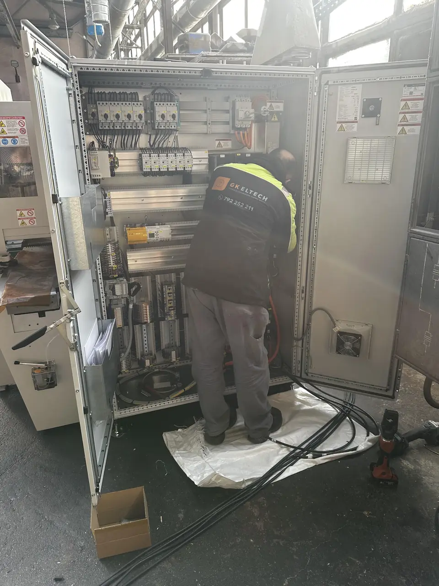
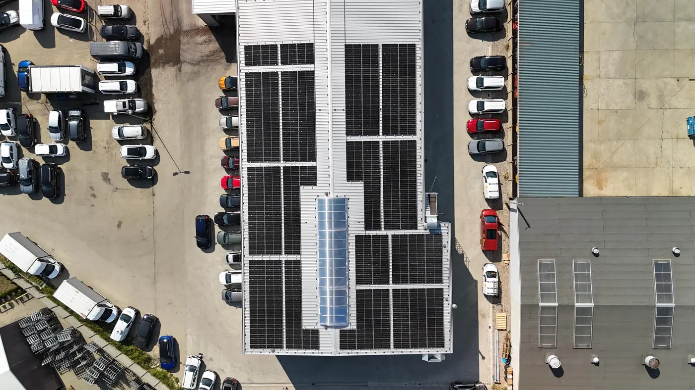
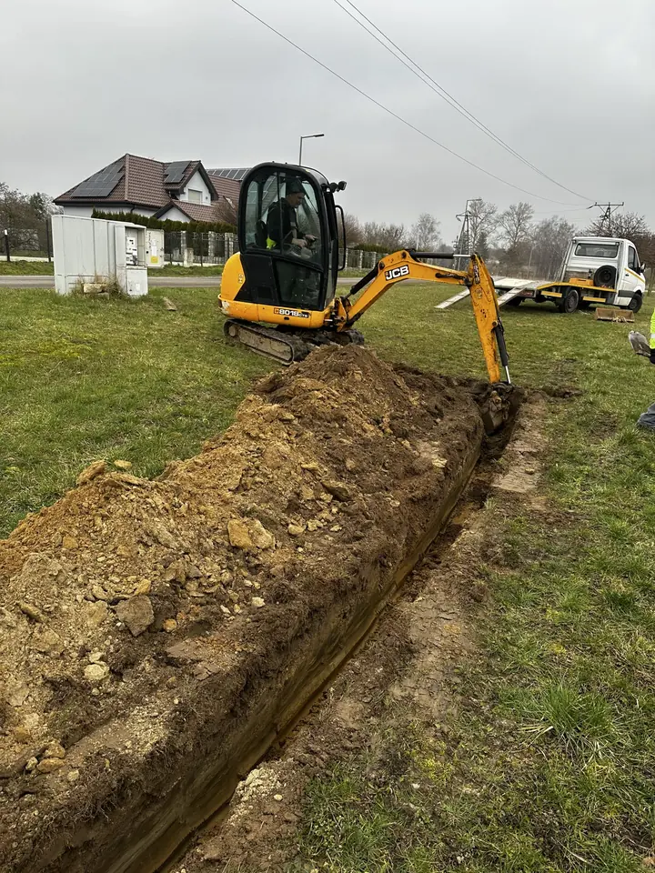
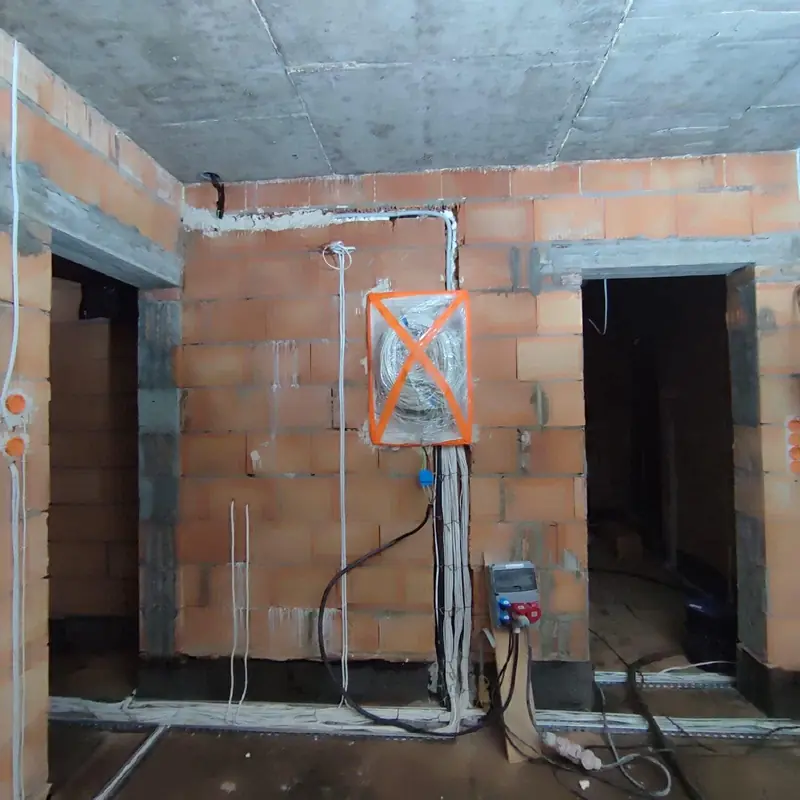
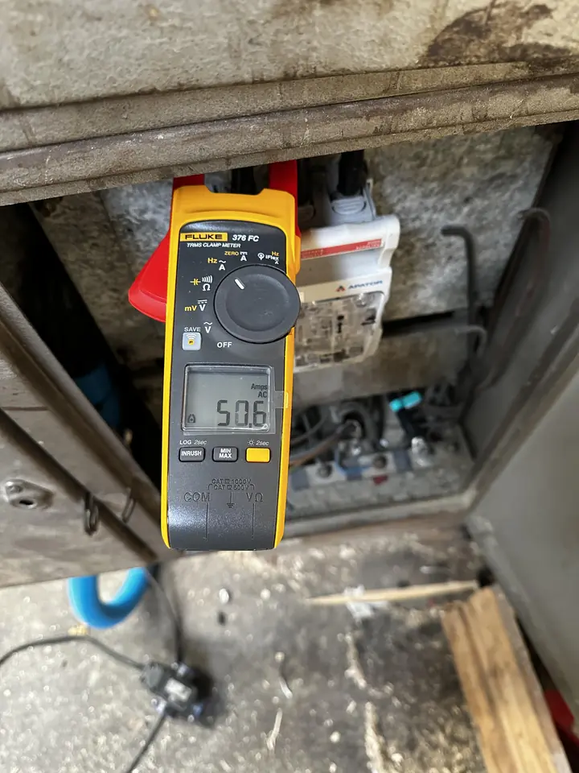
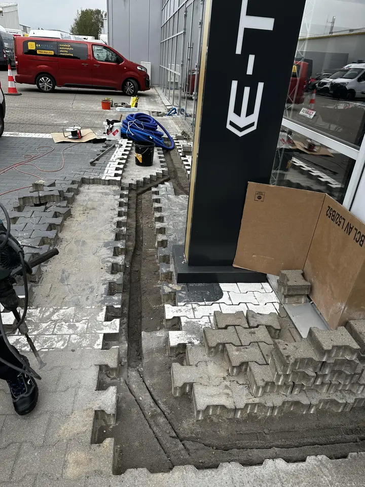
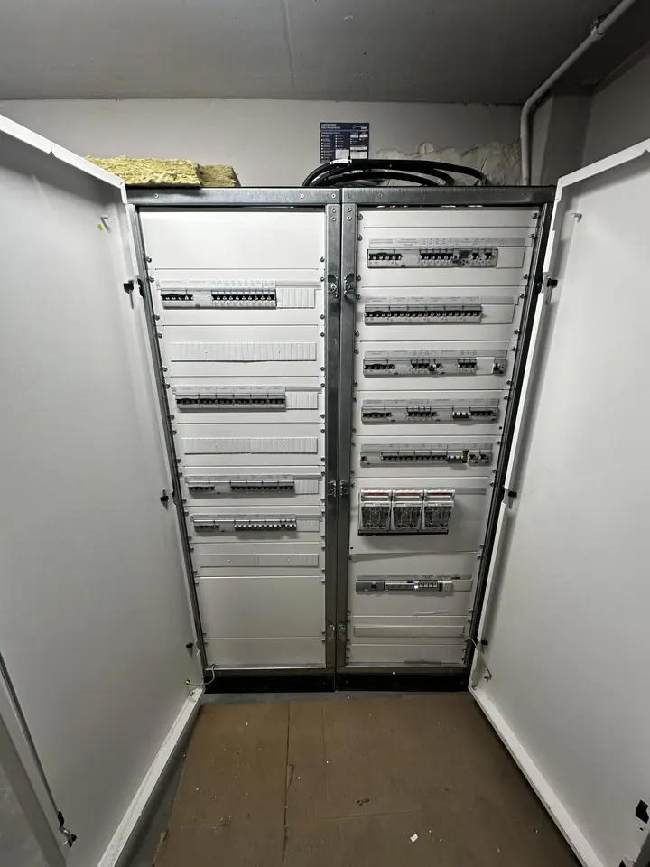

Usługi elektryczne w Szczecinie dla domów i firm
Wykonujemy i modernizujemy instalacje elektryczne, robimy pomiary z protokołem, montujemy alarmy, monitoring i domofony. Od mieszkania po halę produkcyjną.
- od 2011na rynku
- SEPuprawnienia elektryków
- 4,9średnia ocen klientów
- Stadion Miejski im. F. Krygiera
- Teatr Polski w Szczecinie
- Nissan Polmotor
- SPECBUD
- Uzdrowisko Kamień Pomorski
- Szalunki Pietrucha
Usługi elektryczne w Szczecinie i okolicach
Każda usługa ma swoją podstronę - te same adresy, które dziś pracują na pozycje w Google. Zmieniamy wygląd i wygodę, nie strukturę.
Instalacje elektryczne Szczecin
Nowe instalacje od podstaw i modernizacja starych - mieszkania, domy, lokale, hale.
/instalacje-elektryczne-szczecin/
Pomiary elektryczne Szczecin
Odbiory i badania okresowe: izolacja, RCD, pętla zwarcia, uziemienie. Protokół zgodny z PN-HD 60364.
/pomiary-elektryczne-szczecin/
Instalacje odgromowe Szczecin
Projekt, montaż i przeglądy ochrony odgromowej według PN-EN 62305.
/instalacje-odgromowe-szczecin/
Instalacje przeciwpożarowe Szczecin
Systemy sygnalizacji pożarowej, czujki i oświetlenie awaryjne - montaż i serwis.
/instalacje-przeciwpozarowe-szczecin/
Automatyka budynkowa Szczecin
Smart home: sterowanie światłem, roletami, bramą i ogrzewaniem z telefonu.
/automatyka-budynkowa-szczecin/
Alarmy Szczecin
Systemy alarmowe przewodowe i bezprzewodowe dla domu i firmy, z powiadomieniem w telefonie.
/alarmy-szczecin/
Monitoring Szczecin
Kamery IP, rejestratory i podgląd na żywo w smartfonie. Dom, firma, magazyn.
/monitoring-szczecin/
Montaż domofonów Szczecin
Domofony i wideodomofony w domach jednorodzinnych, blokach i lokalach usługowych.
/montaz-domofonow-szczecin/
Sieci komputerowe Szczecin
Okablowanie strukturalne, szafy rack i Wi-Fi w biurach i domach.
/sieci-komputerowe-szczecin/
Kompensacja mocy biernej Szczecin
Dla firm i zakładów: dobór, montaż i serwis układów, mniej opłat za moc bierną.
/kompensacja-mocy-biernej-szczecin/
Opisz zlecenie w minutę
Zaznacz, czego potrzebujesz. Z tego powstaje gotowa wiadomość - wysyłasz ją e-mailem albo dzwonisz i masz wszystko przed oczami. Cenę podajemy po krótkiej rozmowie lub oględzinach, bez zgadywania.
Od mieszkań po stadion i teatr
Doświadczenie zdobywaliśmy na różnych budowach - od inwestycji prywatnych po duże obiekty miejskie. Zdjęcia poniżej pochodzą z naszych prac.





Wybrane obiekty
- Nissan Polmotorkompleksowa instalacja w hali serwisowej
- SPECBUDkompleksowa instalacja hali produkcyjnej
- Szalunki Pietruchabudynek socjalny i hala produkcyjna
- Hala 7Rinstalacja destryfikatorów
- Zespół Szkolno-Przedszkolny w Przylepiewymiana oświetlenia
Na mapie obiekty o znanym adresie. Kolejne pinezki dodamy po uzupełnieniu lokalizacji i zdjęć.

Bez niespodzianek, z protokołem na końcu
- Rozmowa lub oględziny
Krótki wywiad przez telefon albo wizyta na miejscu. Wtedy podajemy orientacyjną wycenę.
- Zakres i termin
Ustalamy, co dokładnie robimy i kiedy. Przy awarii często przyjeżdżamy jeszcze tego samego dnia.
- Wykonanie zgodnie z normą
Prace według PN-HD 60364 i Prawa budowlanego, wykonują elektrycy z uprawnieniami SEP.
- Pomiary i gwarancja
Instalację sprawdzamy pomiarami. Każda instalacja i naprawa jest objęta gwarancją, możliwy dalszy serwis.
Co mówią klienci
4,9 średnia ocen
opinie przeniesione z obecnej strony
Sprawnie wymienili całą instalację elektryczną w moim domu. Zero problemów, wszystko działa jak trzeba. Cena też w porządku.
Agnieszka
Fachowa obsługa, szybka diagnoza i naprawa usterki. Nie było naciągania, konkretna rozmowa i dobre podejście do klienta.
Dariusz
Rzetelny przegląd instalacji elektrycznej. Fachowcy wskazali niebezpieczne usterki, które wymagały naprawy.
Marcin
Szczecin i okolice, całe zachodniopomorskie
Działamy lokalnie, więc szybciej dojeżdżamy i znamy tutejszą infrastrukturę. Najczęściej pracujemy w tych miejscowościach:
Pełna lista usług i miejscowości- Szczecininstalacjealarmymonitoring
- Policeelektrykalarmymonitoring
- Bezrzeczefotowoltaikasiedziba firmy
- Dobragmina Dobra
- Wołczkowogmina Dobra
- Kobylankapowiat stargardzki
Poradniki, które już są na stronie
Nowoczesne elektryczne rozwiązania dla oszczędności energii
Oświetlenie, automatyka budynkowa i ich wpływ na rachunki.
Czytaj → BlogNowoczesne technologie w systemach alarmowych
IoT, powiadomienia i integracja alarmu z monitoringiem.
Czytaj →Pojęcia od A do Z
Od „A jak Awaria instalacji” po „Z jak Zwarcie”.
Najczęściej pytacie
Ile czasu trzeba czekać na przyjazd elektryka?
Reagujemy możliwie najszybciej. Jeśli zgłoszenie dotyczy awarii instalacji, często możemy przyjechać jeszcze tego samego dnia. Najszybciej telefonicznie: 792 252 211.
Czy pracujecie poza Szczecinem?
Tak, w całym województwie zachodniopomorskim, m.in. w Policach, Dobrej, Wołczkowie, Bezrzeczu i Kobylance.
Czy obsługujecie tylko klientów indywidualnych?
Nie. Pracujemy dla osób prywatnych, firm, deweloperów, wspólnot mieszkaniowych i instytucji - w mieszkaniach, domach, lokalach, biurach i halach.
Jak uzyskać wycenę?
Po krótkim wywiadzie telefonicznym lub obejrzeniu obiektu przedstawimy orientacyjną wycenę. Możesz też opisać zlecenie w szybkim zapytaniu.
Czy prace są objęte gwarancją?
Tak, każda wykonana instalacja i naprawa jest objęta gwarancją. W zależności od zlecenia oferujemy też serwis i wsparcie techniczne.
- Firma
- GK ELTECH Grzegorz Karczyński
- Adres
- ul. Miętowa 16A lok. 2, Bezrzecze
72-003 Dobra (zachodniopomorskie) - NIP
- 8522447945
- Zlecenie
- Opisz je w szybkim zapytaniu →